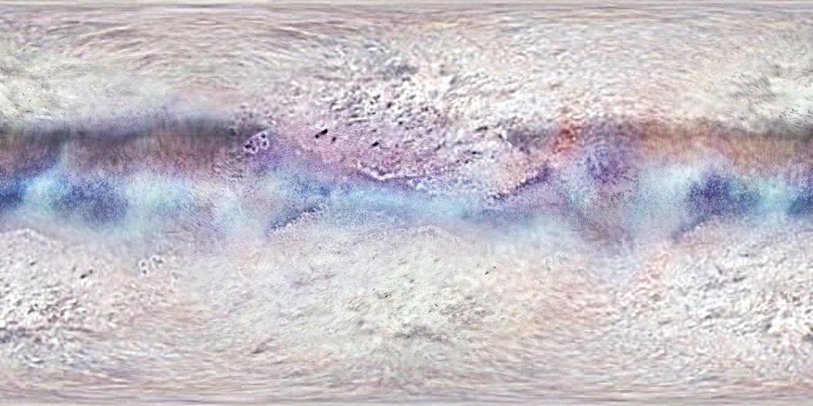

Another viable location of large scale mining operations, similar to that of Jupiter’s moons. Unfortunately, it’s also further away and more expensive. Interestingly, Triton orbits Neptune backwards compared to most moons and Neptune’s rotation.
Orbits:
*
Neptune
Resources:
* Water (Frozen)
* Minerals
Dangers:
* Radiation
* No atmosphere
* Low gravity
* Extreme cold
Sol VIIa - Neptune I
Triton
New Horizons
<< Back <<